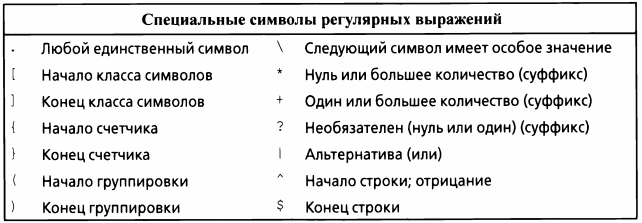
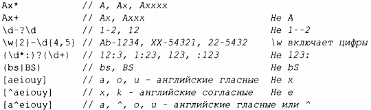

Библиотека регулярных выражений regex может распознавать несколько вариантов обозначений для регулярных выражений. Здесь я использую стандартную запись, вариант стандарта ЕСМА, используемый в ECMAScript (более известен как JavaScript).
Синтаксис регулярных выражений основан на символах со специальным значением.
Например, мы можем указать строку, начинающуюся с нуля или более символов А, за которыми следует одна или несколько букв В, а затем - необязательный символ С:
Вот примеры строк, соответствующих этому регулярному выражению:
А вот примеры строк, не соответствующих этому регулярному выражению:
Часть шаблона рассматривается как подшаблон (который может быть извлечен отдельно из srnatch), если он находится в круглых скобках. Например:
Шаблон может быть сделан необязательным или повторяющимся (по умолчанию он повторяется ровно один раз) с помощью суффикса.
Например:
Вот примеры строк, соответствующих этому регулярному выражению:
А вот примеры строк, не соответствующих этому регулярному выражению:
Суффикс ? после любого указателя повторений (?, *, + и { } ) делает шаблон "ленивым" или "нежадным", т.е. в процессе поиска шаблона он будет искать кратчайшее соответствие, а не длиннейшее. По умолчанию всегда выполняется поиск наидлиннейшего соответствия; этот принцип известен как правwю наибольшего соответствия (Мах Munch rule). Рассмотрим строку
Шаблон ( аЬ) + находит всю строку аЬаЬаЬ, но шаблон ( аЬ) +? находит только первое аЬ.
Наиболее распространенные классификации символов имеют имена.
В регулярных выражениях имя класса символов должно находиться в специальных скобках- [::] . Например, [:digit:] соответствует десятичной цифре. Кроме того, они должны использоваться в паре скобок [ ] , определяющей класс символов.
Для некоторых классов символов поддерживается сокращенная запись.
Кроме того, языки с поддержкой регулярных выражений часто предоставляют следующее.
Для обеспечения переносимости используйте имена классов символов, а не эти аббревиатуры.
В качестве примера рассмотрим написание шаблона, который описывает идентификаторы С++: символ подчеркивания или буква, за которой следует, возможно, пустая последовательность букв, цифр или символов подчеркивания. Чтобы проиллюстрировать ряд тонкостей, я включаю в пример несколько ложных попыток:
Наконец, вот функция, которая использует простейшую версию regex_match () (§9.4.1) для проверки, является ли строка идентификатором:
Обратите внимание на удвоение обратной косой черты при включении обратной косой черты в обычный строковый литерал. Используйте необработанные строковые литералы, чтобы облегчить работу со специальными символами. Например:
Вот несколько примеров шаблонов:
Группа (подшаблон), потенциально представимая с помощью sub match, отделяется круглыми скобками. Если вам нужны круглые скобки, не определяющие подшаблон, используйте (? : вместо простого (. Например:
В предположении, что нас не интересуют символы до числа (предположительно разделители), можно написать.
Это предохранит механизм регулярных выражений от необходимости сохранять первые символы: вариант (?: содержит один только подшаблон.
Последний шаблон в таблице полезен для синтаксического анализа XML. Он находит маркеры начала/конца дескриптора. Обратите внимание, что я использовал нежадное (ленивое) соответствие, . *?,для подшаблона между начальным и конечным дескрипторами. Если бы я использовал просто . *, это вызвало бы проблемы:
Жадное соответствие первого подшаблона привело бы к тому, что первая открывающая угловая скобка < была бы сопоставлена с последней закрывающей >. Это было бы корректным поведением, но вряд ли тем, которое хотел программист.
Более подробное изложение регулярных выражений приведено в [22].